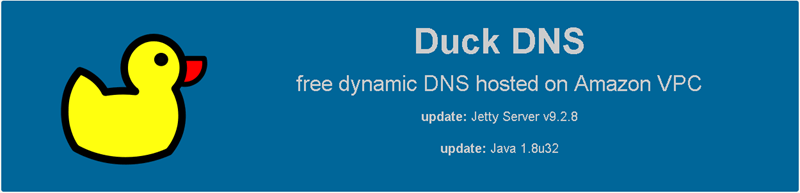
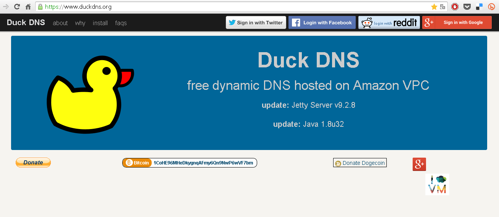
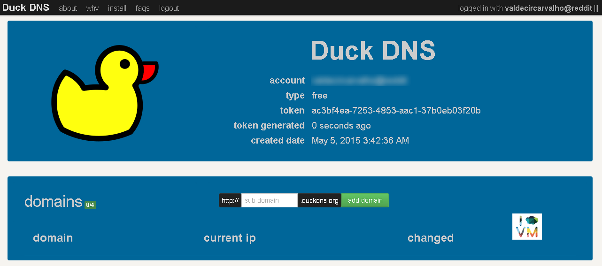
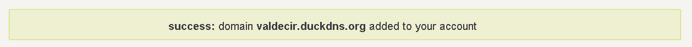
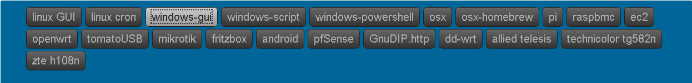
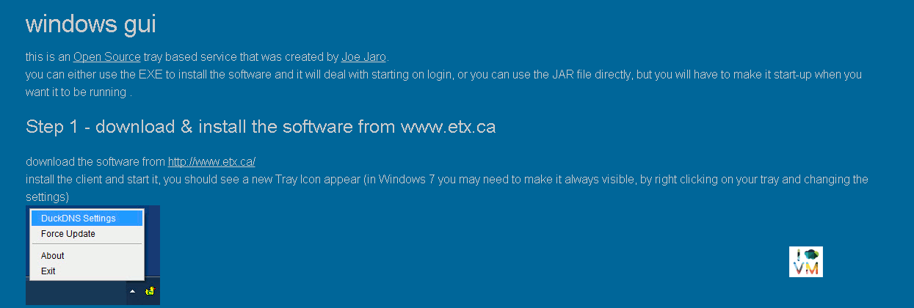
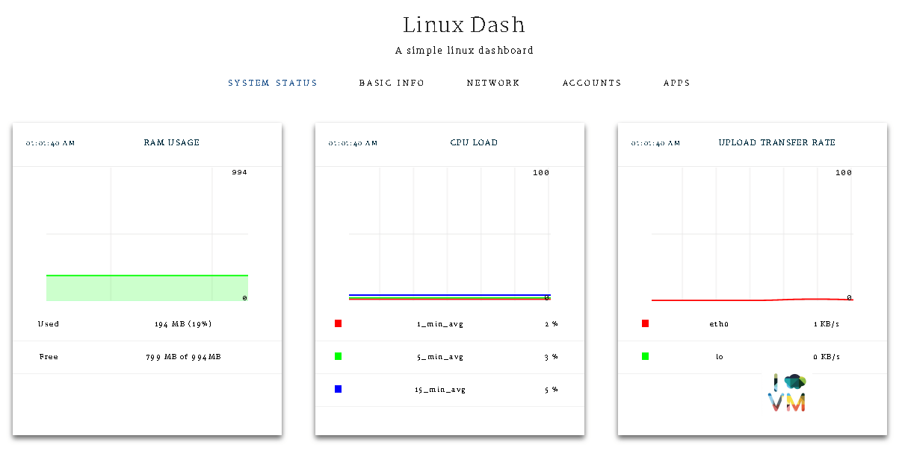

DuckDNS - Serviço de DNS Dinâmico Grátis
HomelabCompartilhe esse post nas redes sociais...
Olá Homelabers!
Hoje vou apresentar a vocês um serviço bastante bacana e útil para nossos Home Labs: DuckDNS.
O DuckDNS é um serviço de DNS dinâmico grátis aos moldes do noip.net, do dyndns entre outros.

Se você não sabe o que é um DNS dinâmico, senta que lá vem história:
DNS significa Domain Name System
São como as páginas brancas da lista telefônica para a Internet. Você fornece um nome, o DNS fornece um número. O nome, neste caso, é especificamente um nome de host e o número é um endereço IP. Sem o DNS, você teria que lembrar de cada endereço IP de cada site que você deseja visitar.
Um computador pessoal conectado na internet recebe um número que o identifica, o seu endereço IP. Porém, em alguns casos como conexões ADSL (Speed, Velox, Netetc), este número varia a cada conexão (IP dinâmico) impossibilitando que seu computador seja encontrado na internet (acesso remoto).
O DDNS (Dynamic Domain Name System) é um dns dinâmico que associa o endereço IP da sua conexão atual a um nome fixo criado por você. Ou seja, com o DDNS o seu computador pessoal agora pode ser encontrado através de um endereço tipo “seucomputador.ddns.com.br” possibilitando o acesso remoto.
Aqui no site do NoIP.com tem um texto bem bacana com um videozinho (em Inglês) explicando direitinho como funciona o DNS e o DDNS.
Eu escolhi o DuckDNS pois hoje, na minha opinião é o melhor e mais simples serviço grátis disponível no mercado.Eu já usei o NoIP.com e o Dydns (que era pago) e estou gostando muito do DuckDNS.
Acesse o site do DuckDns.org

Faça o login com alguma das opções a seguir: Twitter, Facebook, Reddit ou Google

Escolha o nome do seu dominio.duckdns.org e clique em Add Domain

Clique em install
Escolha o seu dominio
O DuckDns oferece mais de uma dezena de opções entre elas Windows, Linux, Mac, pfSense, dd-wrt, etc. Escolha o que melhor se adeque as suas necessidades. Eu por exemplo, optei por instalar o aplicativo de Windows em uma VM que já rodava outra aplicação para facilitar.

Você será apresentado ao passo-a-passo para configuração do cliente no seu sistema, basta seguir os passos indicados.

Pronto! O seu DDNS está configurado. Agora você deve configurar o seu roteador para fazer o redirecionamento de portas para a sua aplicação, mas isso depende de roteador para roteador e infelizmente não tenho como colocar um tutorial aqui para cada tipo de roteador. Mas basta procurar no Google por redirecionamento de portas ou encaminhamento de portas junto com o nome do seu equipamento.
Outro ponto para se levar em consideração, é que a maioria dos provedores de internet bloqueiam o acesso as principais portas (80, 21, 22, etc), então será necessário utilizar uma porta alternativa no redirecionamento. Pode parecer complicado a primeira vista, mas basta dar uma procurada na internet que você vai conseguir.
Um exemplo prático do uso do DNS Dinamico é a configuração de uma VPN para acesso remotou ou rodar um sistema de foto no seu servidor, acessar o seu computador via remote desktop. As possibilidades são infinitas.
Eu subi uma VM Linux com uma aplicação bem simples para testar o DuckDNS. Acesse o endereço http://homelaber.duckdns.org:8001/ para testar.

Agora é a sua vez. Vai lá e configure uma conta no DuckDNS e faça o teste e depois volte aqui para contar o resultado :D
Se você tiver qualquer dúvida, é só deixar uma mensagem aqui que prometo que tento responder e te ajudar.
Até o próximo post.
Não se esqueça de deixar o seu comentário no post, seguir o HomeLaber noTwitter (@Homelaber) e curtir a nossa página no Facebook (fb.com/homelaber) para ficar sempre atualizado das novidade do blog.
Compartilhe esse post nas redes sociais...Valdecir Carvalho
Nerd e pai orgulhoso da Mariana e João. Profissional Sênior de TI com foco em arquitetura de infraestrutura e cloud computing. Blogueiro, podcaster, palestrante, amante de comunidades técnicas, fotógrafo aposentado e adora jogos antigos.
#vExpert · #VMUGLeader · #VUGBrasil · #vBronwBagBrasil · #VeeamVanguard